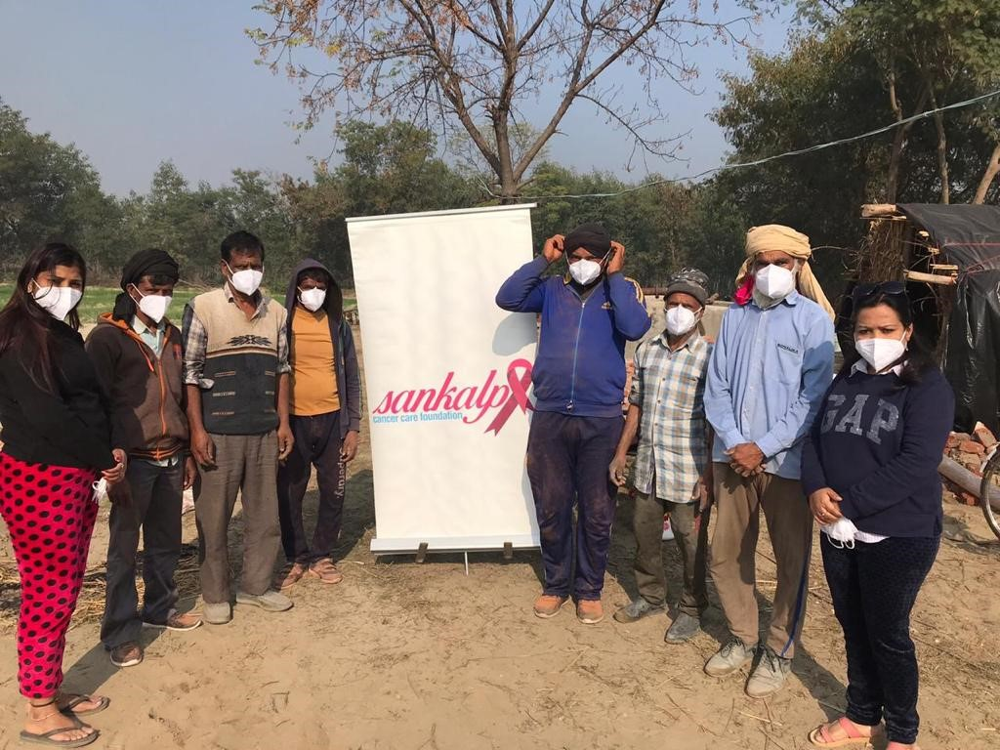

Cancer Treatment Fund for Paediatric Patients provides financial assistance for the treatment of eligible cancer patients, to a maximum limit of Rs. 3,00,000.00 per patient.
Cancer is a disease which occurs when changes in a group of normal cells within the body lead to an uncontrolled.
Sankalp’s Butterfly Program provides Remedial Education Centers for street children and dropouts, wherein the gap can be filled so that these kids can be enrolled in formal education system.
Cancer tumours can be divided into three groups: benign, malignant or precancerous
Without you, we simply couldn’t provide the support needed.
There are many ways you can get involved and help change the lives of people affected by cancer.

Sankalp Cancer Care Foundation was established in 2018 by a few likeminded good Samaritans whose family member(s) had suffered from this dreaded disease. Sankalp means an oath, determination taken for a good cause to help detect cancer at an early stage and provide a better life to the needy.
Sankalp Cancer Care Foundation is a “Not for Profit Charitable Organization” established to educate the masses about the scourge of various types of Cancers ((breast cancer, cervical cancer, prostate cancer, leukemia), their Prevention and to take the process of timely screening to the door steps of the underprivileged masses. If an early detection is made, Sankalp would be able to help such patients to seek timely treatment and intervention. The process of Screening helps finds Cancers at an early and treatable stage and thus improves the victim's survival rate.
We are registered under Section12A and has 80G approval under the Income Tax Act 1961. It is also registered with Niti Aayog (NGO Darpan) and its unique ID is DL/2020/0270997. Its CSR-1 (Ministry of Corporate Affairs Govt. of India) registration number is CSR00011691.
Education and Screening are essential elements of the preventions and treatment undertaken for the weaker sections.
We focus on spreading cancer awareness to multiple stakeholder groups through online & offline mediums which include:
• Awareness camps in rural areas with a focus on oral, breast & cervical cancer.
• Tobacco-cessation camps.
• Anti-tobacco workshops in schools & colleges around the year.
• Corporate awareness workshops Street plays & street music festivals.
• Online campaigns.
• Radio & media campaigns.
• Awareness events.

Dr. Feroz Pasha believe that the key to saving more lives from cancer lies in educating people about cancer prevention techniques, the importance of getting screened regularly for cancer.
The best ways for early detection and follow up action are education and screening. This facility is totally lacking for our underprivileged citizens. This is where the role of Foundations like ours (SCCF) would chip in and provide early detection for breast, prostate, lung, blood (leukemia) and childhood cancer. For this we provide tests like Mammography, PAP Smear, Serum PSA, Chest X-Rays and blood tests as these are essential first steps.
Without you, we simply couldn’t provide the support needed.
There are many ways you can get involved and help change the lives of people affected by cancer.
We are committed to social justice, sustainable development and human rights. The right to communicate freely is a basic human right and a necessity for sustainable development. Access to information is essential to informed decision-making at all levels. We are committed to the dissemination of information and promotion of sustainable development initiatives, in response to the needs of under represented and marginalized sectors of society.
For bridging the data gap and improving information availability we are committed to develop and establish an ideal medium for the Participation and exchange of a trusted and accurate source of quality information. To fight against the scourge of various types of cancers and provide a better life to the needy and affected patients..
Sankalp has been formed with an objective to provide intensive care to needy patients who are suffering from various forms of Cancers through awareness programs, counseling, diagnostic treatment and rehabilitation. Screening helps in finding cancer at an early and treatable stage thus improving chances of patient's survival and to help him lead a healthy life thereafter.
To promote Information collaborations and Constructive communication between NGOs, to develop effective partnership with each other. Networking for the access, sharing and dissemination of information Collaboration and Partnerships between NGOs themselves and with other organizations.Sharing of ideas among NGOs and development agents. Avail free, easy and instant access to information. Help NGOs in their fund-raising efforts. Provide more options before Funding Agencies to select the right choice of organisation to support and work with..